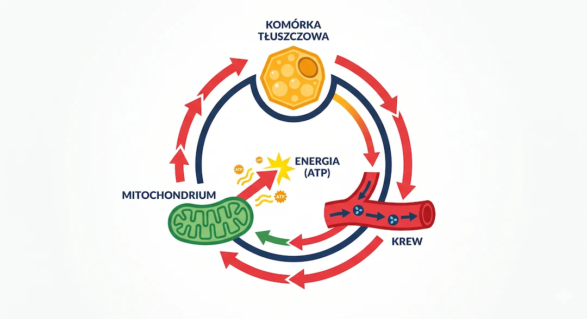
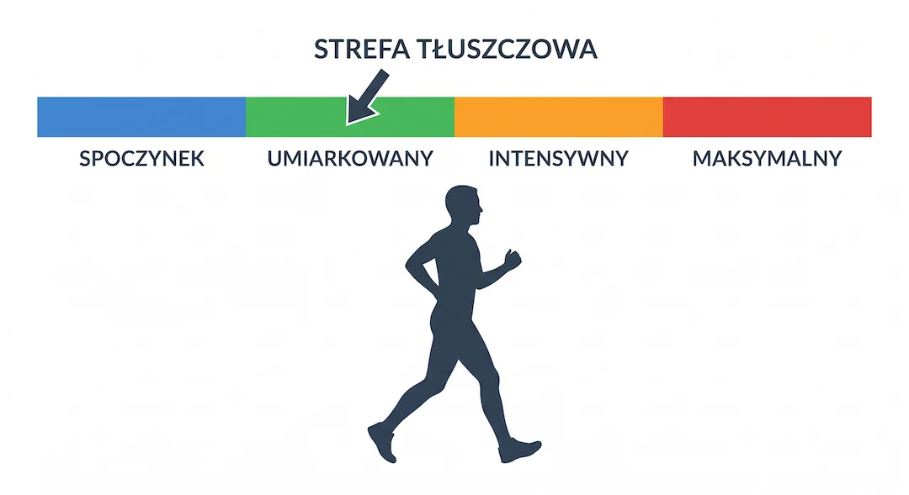
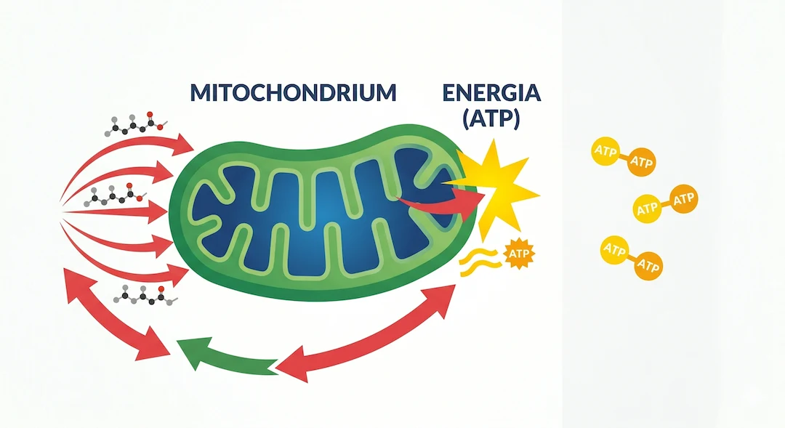

Większość ludzi myśli, że tłuszcz "spala się" przez pot albo ból mięśni. To nieprawda. Tłuszcz nie znika przez skórę – przechodzi przez precyzyjny cykl biochemiczny, zanim stanie się energią napędzającą twoje ruchy, oddech i ciepło ciała. Zrozumienie tego procesu zmienia podejście do treningu i diety – szczególnie po pięćdziesiątce, gdy metabolizm działa inaczej niż w młodości.
Szybka odpowiedź
Spalanie tłuszczu po 50-tce wymaga deficytu energii i pracy mięśni, nie „magicznej” strefy tętna. Jeśli jesz więcej, niż wydatkujesz, tkanka tłuszczowa nie spadnie nawet przy częstych treningach. Praktycznie najlepiej działa 2-3 treningi siłowe tygodniowo plus 7-10 tys. kroków dziennie i regularny sen.
Kluczowe wnioski
Kluczowe wnioski
- Tłuszcz zapasowy jest magazynowany w komórkach tłuszczowych jako trójglicerydy – nie spala się bezpośrednio w miejscu, gdzie go widzisz.
- Uwolnienie trójglicerydów (lipoliza) uruchamia hormony – głównie adrenalina i glukagon – a nie sam wysiłek ani ból.
- Transport przez krew do mięśni i mitochondriów to etap, który po 50-tce może być spowolniony przez insulinooporność i siedzący tryb życia.
- Utlenianie w mitochondriach wytwarza ATP – energię napędzającą ruch, ciepło i oddech. Po 50-tce liczba i sprawność mitochondriów naturalnie spada.
- Trening aerobowy o umiarkowanej intensywności i dieta z deficytem kalorycznym to nadal najlepiej udowodnione metody przyspieszania tego cyklu.
Krok 1: Tłuszcz siedzi zamknięty w komórkach – i wcale nie chce wychodzić?
Tłuszcz zapasowy to trójglicerydy – cząsteczki zbudowane z glicerolu i trzech kwasów tłuszczowych – zamknięte w adipocytach, czyli komórkach tłuszczowych. Sam fakt, że jesz mało lub trenujesz, nie wyciąga ich automatycznie na zewnątrz. Potrzebny jest sygnał hormonalny.
Główne hormony uruchamiające lipolizę (rozkład trójglicerydów) to adrenalina, noradrenalina i glukagon. Insulina działa odwrotnie – blokuje uwalnianie kwasów tłuszczowych. Dlatego wysoki poziom insuliny (np. po posiłku bogatym w węglowodany) dosłownie zamyka drzwi do magazynu tłuszczu.
U osób po 50-tce wrażliwość na insulinę często się obniża, co paradoksalnie może utrudniać lipolizę nawet przy deficycie kalorycznym. To nie jest wymówka – to biologia, którą można korygować aktywnością fizyczną i jakością diety.
- Trójglicerydy = forma magazynowania energii w komórkach tłuszczowych
- Lipoliza = enzymatyczny rozkład trójglicerydów na glicerol + wolne kwasy tłuszczowe
- Hormony kataboliczne (adrenalina, glukagon) uruchamiają lipolizę
- Insulina hamuje lipolizę – stąd znaczenie okna żywieniowego i składu posiłków

Krok 2: Trójglicerydy w krwiobiegu – transport do miejsca spalania?
Po uwolnieniu z adipocytów wolne kwasy tłuszczowe (FFA – free fatty acids) trafiają do krwi. Nie podróżują solo – wiążą się z albuminą, białkiem transportowym, i są w ten sposób przenoszone do mięśni, serca, wątroby i innych tkanek, które potrzebują energii.
To właśnie ten etap pokazuje infografika konta desi. genetics: "Transport through blood – Triglycerides transported through blood". Ilość kwasów tłuszczowych krążących w krwi jest proporcjonalna do intensywności lipolizy, a nie bezpośrednio do wysiłku fizycznego.
Wysoki poziom trójglicerydów we krwi na czczo (powyżej 150 mg/dl) może świadczyć o zaburzeniu tego transportu – zbyt dużo tłuszczu krąży, za mało trafia do mitochondriów i jest efektywnie spalane. To częsty problem u osób 50+ z siedzącym trybem życia.
- Wolne kwasy tłuszczowe transportowane przez krew w kompleksie z albuminą
- Wysokie trójglicerydy na czczo (> 150 mg/dl) – sygnał zaburzonego metabolizmu tłuszczów
- Trening zwiększa zdolność mięśni do pobierania i spalania kwasów tłuszczowych z krwi
- Wątroba przekształca nadmiar FFA w VLDL – lipoproteiny transportujące tłuszcz dalej

Krok 3: Mitochondria – właściwy piec, w którym tłuszcz staje się energią?
Kwasy tłuszczowe wchodzą do mitochondriów (za pomocą transportera karnitynowego – stąd kontrowersje wokół suplementacji L-karnityną) i przechodzą proces zwany beta-oksydacją. W jej wyniku powstaje acetylo-CoA, który zasila cykl Krebsa i ostatecznie łańcuch oddechowy, produkując ATP – walutę energetyczną każdej komórki.
Jeden gram tłuszczu dostarcza około 9 kcal energii – ponad dwa razy więcej niż gram węglowodanów czy białka. Ale spalenie tłuszczu wymaga tlenu (to spalanie tlenowe, aerobowe) i sprawnych mitochondriów.
Problem po 50-tce: badania konsekwentnie pokazują, że z wiekiem spada zarówno liczba mitochondriów w komórkach mięśniowych, jak i ich wydajność. To jeden z biologicznych mechanizmów spowolnienia metabolizmu. Trening siłowy i wytrzymałościowy to dwa najlepiej udowodnione narzędzia stymulujące biogenezę mitochondriów nawet u starszych dorosłych.
- Beta-oksydacja = rozkład kwasów tłuszczowych w mitochondriach do acetylo-CoA
- 1 g tłuszczu = ~9 kcal, ale spalanie wymaga tlenu i sprawnych mitochondriów
- Po 50-tce liczba i sprawność mitochondriów naturalnie maleje (mitochondrialna dysfunkcja)
- Trening aerobowy i siłowy odwracają ten trend – stymulują biogenezę mitochondriów przez PGC-1α

Co spowalnia ten cykl po 50-tce – i co możesz z tym zrobić?
Cały cykl – od uwalniania trójglicerydów z komórek tłuszczowych, przez transport krwią, po spalanie w mitochondriach – jest po pięćdziesiątce systematycznie spowalniany przez kilka równoległych mechanizmów: spadek masy mięśniowej ( sarkopenia ), insulinooporność, wzrost kortyzolu w spoczynku, zmniejszona aktywność lipazy lipoproteinowej oraz właśnie spadek funkcji mitochondriów.
Żaden z tych mechanizmów nie jest nieodwracalny. Trening oporowy 2–3 razy tygodniowo buduje masę mięśniową, która zwiększa zapotrzebowanie na tłuszcz jako paliwo. Trening aerobowy o umiarkowanej intensywności (50–70% VO2max) maksymalizuje udział tłuszczu jako substratu energetycznego – to tzw. strefa fat-burning, poparta solidną literaturą naukową.
Artykuł ma charakter edukacyjny i nie zastępuje indywidualnej konsultacji lekarskiej. Jeśli masz choroby przewlekłe, przyjmujesz leki lub masz nieprawidłowe wyniki badań metabolicznych (lipidogram, glukoza, insulina) – skonsultuj plan aktywności i diety z lekarzem lub certyfikowanym dietetykiem.
- Sarkopenia (utrata mięśni): trening siłowy 2–3x/tydzień jako priorytet
- Insulinooporność: redukcja cukrów prostych, zwiększenie aktywności, ewentualnie konsultacja z lekarzem
- Spowolnione mitochondria: trening aerobowy 150+ minut tygodniowo w strefie umiarkowanej
- Wysoki kortyzol (stres, niedobór snu): sen 7–9 h, zarządzanie stresem jako element planu redukcji
- Siedzący tryb życia: NEAT (codzienna aktywność poza treningiem) ma większy wpływ niż jedna sesja na siłowni

Zobacz też:trening siłowy, dieta po 50-tce, sen i regeneracja oraz badania krwi.
Najczęściej zadawane pytania
Najczęściej zadawane pytania
Czy tłuszcz naprawdę "spala się" podczas pocenia?
Nie. Pot to woda i sole mineralne – nie tłuszcz. Tłuszcz jest metabolizowany wewnątrz komórek, głównie w mitochondriach mięśni i wątroby. Produktami końcowymi spalania tłuszczu są dwutlenek węgla (wydychasz go) i woda (częściowo wydalana z moczem i potem). Obfite pocenie nie przyspiesza spalania tłuszczu – świadczy jedynie o wysiłku termicznym.
Warto przeczytać też: trening siłowy, dieta po 50-tce, sen i regeneracja, badania krwi.
Powiązane tematy: trening siłowy, dieta po 50-tce, sen i regeneracja, suplementacja.
Powiązane tematy: trening siłowy, dieta po 50-tce, sen i regeneracja, suplementacja.
Czy można spalać tłuszcz z konkretnego miejsca (np. z brzucha)?
Nie – to tzw. mit "spot reduction". Lipoliza jest sterowana hormonalnie i zachodzi systemowo w całym organizmie. Nie możesz wymusić spalania tłuszczu z jednego miejsca przez ćwiczenie tej partii ciała. Gęstość receptorów beta-adrenergicznych (aktywujących lipolizę) różni się między okolicami ciała, dlatego kolejność utraty tłuszczu jest genetycznie zdeterminowana. Tłuszcz trzewny (brzuszny) jest jednak metabolicznie aktywniejszy i przy konsekwentnym deficycie kalorycznym zwykle redukuje się relatywnie szybko.
Jak długo trzeba ćwiczyć, żeby zacząć spalać tłuszcz?
Lipoliza zaczyna się niemal natychmiast po podjęciu wysiłku, ale udział tłuszczu jako substratu energetycznego rośnie wraz z czasem trwania aktywności. W pierwszych minutach dominuje spalanie glikogenu (cukrów). Przy wysiłku aerobowym o umiarkowanej intensywności trwającym 20–30 minut udział tłuszczu jako paliwa wyraźnie wzrasta. Ćwiczenia na czczo mogą nieznacznie zwiększać udział tłuszczu, ale efekt jest mniejszy niż często sugerują popularne media, a dla osób 50+ mogą wiązać się z ryzykiem hipoglikemii.
Czy dieta ketogeniczna przyspiesza spalanie tłuszczu po 50-tce?
Dieta niskowęglowodanowa/ketogeniczna obniża insulinę i może ułatwiać mobilizację tłuszczu z magazynów. Badania wskazują na skuteczność w krótkoterminowej redukcji masy ciała. Jednak długoterminowe dane nie wskazują na jej przewagę nad innymi dietami z deficytem kalorycznym pod względem utraty tkanki tłuszczowej. U osób 50+ z chorobami nerek, sercowymi lub przyjmujących leki hipoglikemizujące dieta ketogeniczna wymaga nadzoru lekarskiego.
Dlaczego po 50-tce trudniej schudnąć niż w młodości?
Kilka mechanizmów działa równocześnie: spada masa mięśniowa (mięśnie to główne miejsce spalania tłuszczu), mitochondria są mniej liczne i wydajne, rośnie insulinooporność, zmienia się profil hormonalny (menopauza, spadek testosteronu u mężczyzn) i zwiększa się tendencja do akumulacji tłuszczu trzewnego. To nie jest niemożliwe do pokonania – wymaga jednak większej systematyczności i świadomego doboru metod.
Źródła
Źródła po 50-tce warto wdrażać krok po kroku i od razu łączyć teorię z praktyką. Dzięki temu łatwiej utrzymać regularność, poprawić bezpieczeństwo działań i szybciej zauważyć trwałe efekty zdrowotne w codziennym życiu.
- Horowitz JF, Klein S, Lipid metabolism during endurance exercise, American Journal of Clinical Nutrition, 2000
- Goodpaster BH, Sparks LM, Metabolic Flexibility in Health and Disease, Cell Metabolism, 2017
- American College of Sports Medicine, ACSM's Guidelines for Exercise Testing and Prescription, 11th ed., 2021
- Broskey NT et al., Exercise efficiency relates with mitochondrial content and function in older adults, Physiological Reports, 2015
- Schrauwen P, Hesselink MKC, Oxidative capacity, lipotoxicity, and mitochondrial damage in type 2 diabetes, Diabetes, 2004
- Vosselman MJ et al., Energy expenditure during cold exposure: implications for fat oxidation, PLOS ONE, 2014
- Blüher M, Obesity: global epidemiology and pathogenesis, Nature Reviews Endocrinology, 2019
- Wolfe RR, The underappreciated role of muscle in health and disease, American Journal of Clinical Nutrition, 2006
Uwaga: Artykuł ma charakter informacyjny i edukacyjny. Nie zastępuje konsultacji lekarskiej, diagnozy ani leczenia.